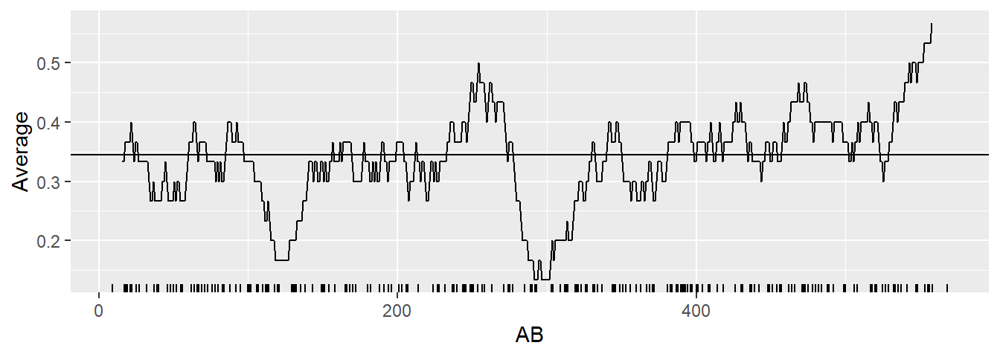
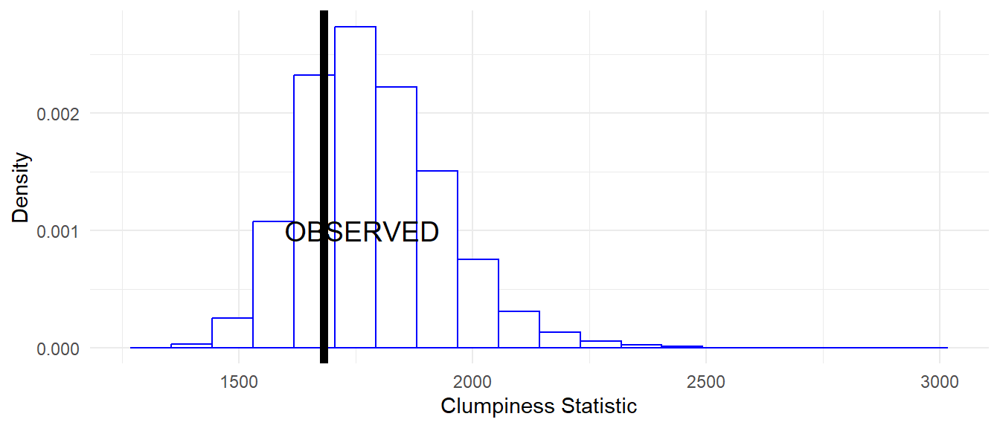

library(tidyverse)
library(knitr)
library(baseballr)MA388 Sabermetrics: Lesson 24
Streakiness Statistics
Review - DiMaggio’s Streak
Last class we talked about the incredible hitting streak of Joe DiMaggio. In 1941, Joe DiMaggio of the New York Yankees hit safely (got at least one hit) in 56 straight games. The streak began on May 15th, 1941 when DiMaggio went 1-for-4 against the Chicago White Sox and ended on July 17th when he went 0-for-3 with a walk against the Cleveland Indians.
Individual At-Bat Streaks
We looked at DiMaggio’s streak of games with hits, but now we turn our attention to streaks in individual at-bats. In 2011, Miguel Cabrera led the league with a batting average of 0.344. Let’s take a look at his streaks for the season.
# Load the data.
retro2011 <- retrosheet_data(years_to_acquire = '2011') |>
pluck('2011') |>
pluck('events')Filter the data to include only Miguel Cabrera’s plate appearances.
library(Lahman)
cabrera_id <- People |>
filter(nameFirst == "Miguel", nameLast == "Cabrera") |>
select(retroID) |> pull()
cabrera <- retro2011 |>
subset(bat_id == cabrera_id & ab_fl==TRUE)To look at streaks we need to first identify which at-bats resulted in a hit and which resulted in an out.
cabrera <- cabrera |>
mutate(H = ifelse(h_fl > 0, 1, 0),
DATE = str_sub(game_id, 4, 12),
AB = 1,
AB_Num = row_number()) |>
arrange(DATE)We can then use the streaks function we defined last class to calculate the length of hit streaks and out streaks.
streaks <- function(y){
x <- rle(y)
class(x) <- "list"
return(as_tibble(x))
}
# First, let's look at hit streaks.
cab_hits <- cabrera |>
pull(H) |>
streaks() |>
filter(values == 1)
cab_hits |>
pull(lengths) [1] 1 1 2 1 3 1 4 1 1 2 1 1 2 1 1 3 1 1 1 1 1 1 3 1 1 1 1 1 1 1 1 1 1 2 2 1 1
[38] 1 1 1 1 1 2 1 2 1 1 2 1 2 1 1 2 1 2 1 3 1 1 3 3 3 1 2 1 1 1 1 1 2 1 1 2 2
[75] 1 1 1 1 1 2 2 2 1 3 2 1 2 2 1 1 1 1 2 1 1 1 1 2 2 1 1 1 1 3 1 1 1 3 1 1 1
[112] 1 1 1 1 1 1 3 2 1 1 1 1 2 1 1 1 1 1 1 2 2 5 2 2 1 2What can you learn from looking at Cabrera’s hitting streaks over the season?
library(zoo)
moving_average <- function(df, width){
N <- nrow(df)
df |>
transmute(Game = rollmean(1:N, k = width, fill = NA),
Average = rollsum(H, width, fill = NA) / rollsum(AB, width, fill = NA))
}
# Let's assume ~3 ABs/game, so 30 ABs will give us a ~10-game window.
moving_average(cabrera, 30) |>
ggplot(aes(Game, Average)) +
geom_line() + xlab("AB") +
geom_hline(yintercept = mean(cabrera$H)) +
geom_rug(data = cabrera |> filter(H==1),
aes(AB_Num, .3 * H), sides = "b")
After looking at the plot, does it change your conclusions from before?
Now let’s look at Cabrera’s hitting slumps.
# Find Cabrera's hitting slumps.
cab_outs <- cabrera |>
pull(H) |>
streaks() |>
filter(values == 0)
cab_outs |>
pull(lengths) [1] 1 3 2 6 1 7 2 2 10 5 1 2 1 1 5 2 3 6 2 1 1 2 1 1 1
[26] 14 5 2 3 1 4 4 3 1 3 3 2 2 1 4 1 2 6 1 5 1 2 4 1 1
[51] 8 2 3 4 2 1 3 1 5 3 2 2 2 4 7 9 5 3 7 1 7 3 1 4 1
[76] 1 4 1 2 4 9 4 2 4 1 3 4 1 3 3 2 2 2 1 3 1 2 3 1 2
[101] 5 3 4 1 2 1 2 2 1 1 2 3 2 3 1 1 2 3 1 8 1 1 1 1 1
[126] 1 1 6 2 1 2 1 1 2 2 3What can you learn from looking at Cabrera’s hitting slumps over the season?
How does this compare to the rest of the league? Since Cabrera had 572 at bats over the season, let’s compare him to other players who had over 500 at-bats.
# Filter the data to get all players with over 500 at-bats in the season.
retro_500 = retro2011 |>
group_by(bat_id) |>
summarise(AB = sum(ab_fl)) |>
filter(AB >= 500) |>
pull(bat_id)
# Create a function to calculate the longest slump for each player.
longest_ofer <- function(batter){
retro2011 |>
filter(bat_id == batter, ab_fl == TRUE) |>
mutate(H = ifelse(h_fl > 0, 1, 0),
DATE = substr(game_id, 4, 12)) |>
arrange(DATE) |>
pull(H) |>
streaks() |>
filter(values == 0) |>
summarize(MAX_STREAK = max(lengths))
}
# Find each player's longest slump.
retro_500 |>
map_df(longest_ofer) |>
mutate(BAT_ID = retro_500) |>
left_join(People |> select(nameFirst, nameLast, retroID),
by = c("BAT_ID" = "retroID")) |>
arrange(-MAX_STREAK) |>
mutate(Rank = row_number()) |>
knitr::kable()| MAX_STREAK | BAT_ID | nameFirst | nameLast | Rank |
|---|---|---|---|---|
| 35 | ibanr001 | Raul | Ibanez | 1 |
| 30 | aybae001 | Erick | Aybar | 2 |
| 27 | mcgec001 | Casey | McGehee | 3 |
| 24 | sancg001 | Gaby | Sanchez | 4 |
| 23 | betay001 | Yuniesky | Betancourt | 5 |
| 23 | bourp001 | Peter | Bourjos | 6 |
| 23 | hardj003 | J. J. | Hardy | 7 |
| 23 | howar001 | Ryan | Howard | 8 |
| 23 | lee-c001 | Carlos | Lee | 9 |
| 23 | ortid001 | David | Ortiz | 10 |
| 23 | pennc001 | Cliff | Pennington | 11 |
| 23 | santc002 | Carlos | Santana | 12 |
| 22 | escoa003 | Alcides | Escobar | 13 |
| 22 | reynm001 | Mark | Reynolds | 14 |
| 22 | riosa002 | Alex | Rios | 15 |
| 22 | walkn001 | Neil | Walker | 16 |
| 21 | kinsi001 | Ian | Kinsler | 17 |
| 20 | cabra002 | Asdrubal | Cabrera | 18 |
| 20 | cuddm001 | Michael | Cuddyer | 19 |
| 20 | huffa001 | Aubrey | Huff | 20 |
| 20 | ramia001 | Aramis | Ramirez | 21 |
| 20 | trumm001 | Mark | Trumbo | 22 |
| 20 | uptoj001 | Justin | Upton | 23 |
| 20 | victs001 | Shane | Victorino | 24 |
| 20 | younc004 | Chris | Young | 25 |
| 19 | desmi001 | Ian | Desmond | 26 |
| 19 | gonza002 | Alex | Gonzalez | 27 |
| 19 | granc001 | Curtis | Granderson | 28 |
| 19 | huntt001 | Torii | Hunter | 29 |
| 19 | jacka001 | Austin | Jackson | 30 |
| 19 | jonea003 | Adam | Jones | 31 |
| 19 | matsh001 | Hideki | Matsui | 32 |
| 19 | maybc001 | Cameron | Maybin | 33 |
| 19 | rollj001 | Jimmy | Rollins | 34 |
| 19 | swisn001 | Nick | Swisher | 35 |
| 19 | valed001 | Danny | Valencia | 36 |
| 19 | younm003 | Michael | Young | 37 |
| 18 | bonie001 | Emilio | Bonifacio | 38 |
| 18 | butlb003 | Billy | Butler | 39 |
| 18 | kendh001 | Howie | Kendrick | 40 |
| 18 | markn001 | Nick | Markakis | 41 |
| 18 | stubd001 | Drew | Stubbs | 42 |
| 18 | teixm001 | Mark | Teixeira | 43 |
| 18 | uptob001 | B. J. | Upton | 44 |
| 18 | wietm001 | Matt | Wieters | 45 |
| 18 | zobrb001 | Ben | Zobrist | 46 |
| 17 | barnd001 | Darwin | Barney | 47 |
| 17 | brucj001 | Jay | Bruce | 48 |
| 17 | fielp001 | Prince | Fielder | 49 |
| 16 | abreb001 | Bobby | Abreu | 50 |
| 16 | bartj001 | Jason | Bartlett | 51 |
| 16 | escoy001 | Yunel | Escobar | 52 |
| 16 | espid001 | Danny | Espinosa | 53 |
| 16 | gardb001 | Brett | Gardner | 54 |
| 16 | hosme001 | Eric | Hosmer | 55 |
| 16 | johnk003 | Kelly | Johnson | 56 |
| 16 | mccua001 | Andrew | McCutchen | 57 |
| 16 | pedrd001 | Dustin | Pedroia | 58 |
| 16 | philb001 | Brandon | Phillips | 59 |
| 16 | ramia003 | Alexei | Ramirez | 60 |
| 16 | suzui001 | Ichiro | Suzuki | 61 |
| 16 | wellv001 | Vernon | Wells | 62 |
| 15 | andre001 | Elvis | Andrus | 63 |
| 15 | beltc001 | Carlos | Beltran | 64 |
| 15 | crawc002 | Carl | Crawford | 65 |
| 15 | damoj001 | Johnny | Damon | 66 |
| 15 | ellsj001 | Jacoby | Ellsbury | 67 |
| 15 | freef001 | Freddie | Freeman | 68 |
| 15 | guerv001 | Vladimir | Guerrero | 69 |
| 15 | hilla001 | Aaron | Hill | 70 |
| 15 | lonej001 | James | Loney | 71 |
| 15 | pradm001 | Martin | Prado | 72 |
| 14 | cabrm001 | Miguel | Cabrera | 73 |
| 14 | gonza003 | Adrian | Gonzalez | 74 |
| 14 | jeted001 | Derek | Jeter | 75 |
| 14 | peraj001 | Jhonny | Peralta | 76 |
| 14 | stanm004 | Giancarlo | Stanton | 77 |
| 14 | tulot001 | Troy | Tulowitzki | 78 |
| 14 | uggld001 | Dan | Uggla | 79 |
| 14 | vottj001 | Joey | Votto | 80 |
| 14 | wertj001 | Jayson | Werth | 81 |
| 13 | casts001 | Starlin | Castro | 82 |
| 13 | infao001 | Omar | Infante | 83 |
| 13 | kempm001 | Matt | Kemp | 84 |
| 13 | pench001 | Hunter | Pence | 85 |
| 13 | pujoa001 | Albert | Pujols | 86 |
| 12 | braur002 | Ryan | Braun | 87 |
| 12 | crisc001 | Coco | Crisp | 88 |
| 12 | fukuk001 | Kosuke | Fukudome | 89 |
| 12 | konep001 | Paul | Konerko | 90 |
| 12 | kotcc001 | Casey | Kotchman | 91 |
| 12 | morsm001 | Mike | Morse | 92 |
| 12 | pierj002 | Juan | Pierre | 93 |
| 11 | cabrm002 | Melky | Cabrera | 94 |
| 11 | canor001 | Robinson | Cano | 95 |
| 11 | franj004 | Jeff | Francoeur | 96 |
| 11 | gorda001 | Alex | Gordon | 97 |
| 10 | bautj002 | Jose | Bautista | 98 |
| 10 | bourm001 | Michael | Bourn | 99 |
| 10 | martv001 | Victor | Martinez | 100 |
| 9 | reyej001 | Jose | Reyes | 101 |
A Streakiness Statistic
We can quantify streakiness by looking at the sum of the squares of the gaps between successive hits (called the “streakiness” or “clumpiness” coefficient).
Calculate the streakiness coefficient for Cabrera.
# Streakiness Coefficient
cabrera_coeff <- cabrera |>
pull(H) |>
streaks() |>
filter(values == 0) |>
summarize(C = sum(lengths ^ 2)) |>
pull()
cabrera_coeff[1] 1681Now we can simulate what may have happened at random for a player with the same number of hits and outs as Cabrera.
# Create a function to simulate the streakiness coefficient.
random_mix <- function(y) {
y |>
sample() |>
streaks() |>
filter(values == 0) |>
summarize(C = sum(lengths ^ 2)) |>
pull()
}
# Run the simulation 10000 times.
cabrera_random <- replicate(10000, random_mix(cabrera$H))Plot the simulation results.
ggplot(data.frame(cabrera_random), aes(cabrera_random)) +
geom_histogram(aes(y = stat(density)), bins = 20,
color = "blue", fill = "white") +
geom_vline(xintercept = cabrera_coeff, size = 2) +
annotate(geom = "text", x = cabrera_coeff * 1.05,
y = 0.0010, label = "OBSERVED", size = 5) +
theme_minimal() +
labs(x = "Clumpiness Statistic",
y = "Density")
How do we interpret the plot?